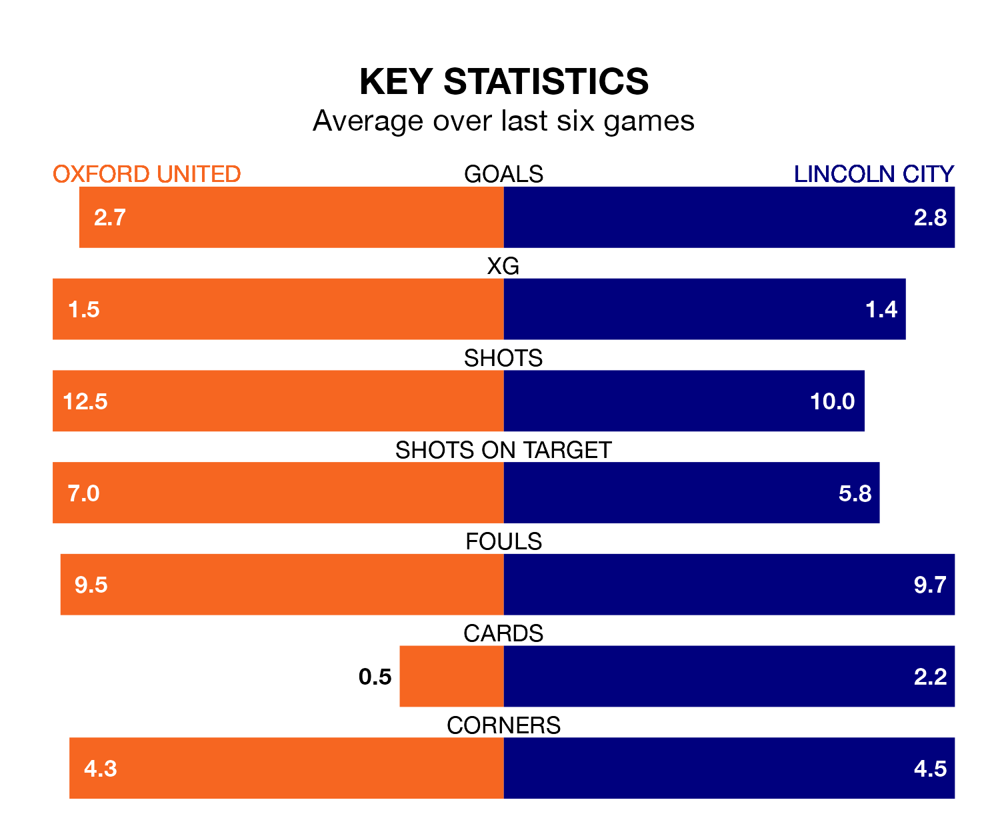

Oxford United face a challenge to maintain their high-scoring form at home against a tight Lincoln City defence on Tuesday.
With 76 goals in 43 games, Oxford are the fourth-highest scorers in EFL League One ahead of the 7.45pm kick-off at the Kassam Stadium.
They face an Imps side who have scored 62 in 43 matches, but conceded only 37 goals, putting them joint-top of the league's tightest defences.
With Lukas Jensen between the sticks, Lincoln can rely on one of the league's safest pair of hands. He has kept 18 clean sheets in his 42 appearances this season, and no 'keeper has prevented the opposition scoring more often in EFL League One.
In Oxford's net, James Beadle has seven clean sheets in 25 games. He has conceded a goal every 90 minutes, 30% more often than the 118 minutes between goals for Jensen.
In the last 10 years, Oxford and Lincoln have played each other on nine occasions. Oxford won five of them and Lincoln four.
On average, the Us scored 1.7 goals and the Imps 1.0 in those matches.
Their last meeting was on October 31, when Oxford won 2-0 away.
United are sixth in the table after 43 games, of which they have won 21 and drawn 10, earning 73 points.
City are two places behind the Us in eighth, with 18 wins and 14 draws putting them on 68 points.
The home team are in good form in EFL League One, with four wins and a draw from their last six games.
And also with four wins and a draw over that period, the Imps' form is identical – they have both taken 13 points from 18.
Oxford's last match was on Saturday, a 5-0 win against Peterborough United, with Rúben da Rocha Rodrigues (two), Billy Bodin, Josh Murphy and Mark Thomas Harris getting the goals for the Us.
Lincoln lost 2-1 against Wigan Athletic last time out, also on Saturday, with Daniel Mandroiu on the scoresheet.
Tuesday's match will be refereed by Lee Swabey, who has taken charge of 12 EFL League One games so far this season, issuing two red cards and booking 63 players. He has awarded two penalties.
The last Oxford game Swabey refereed was a 1-0 home loss to Barnsley on January 23. He is yet to oversee a match featuring Lincoln this season.
Updated: 11:31 (UTC), 15/04/24